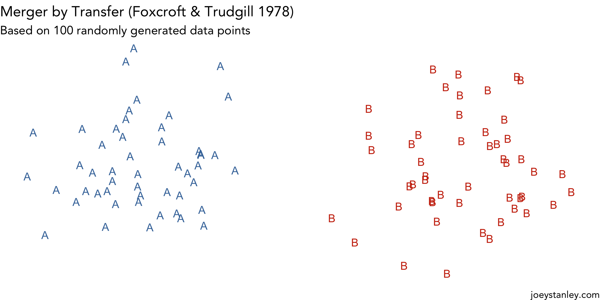
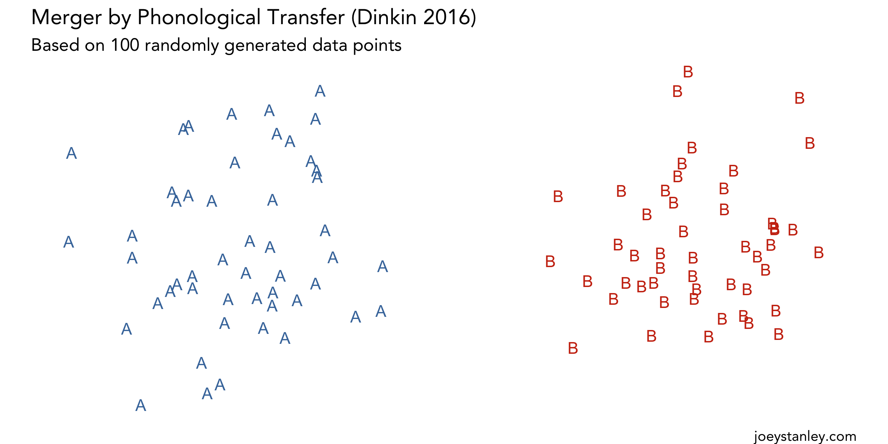
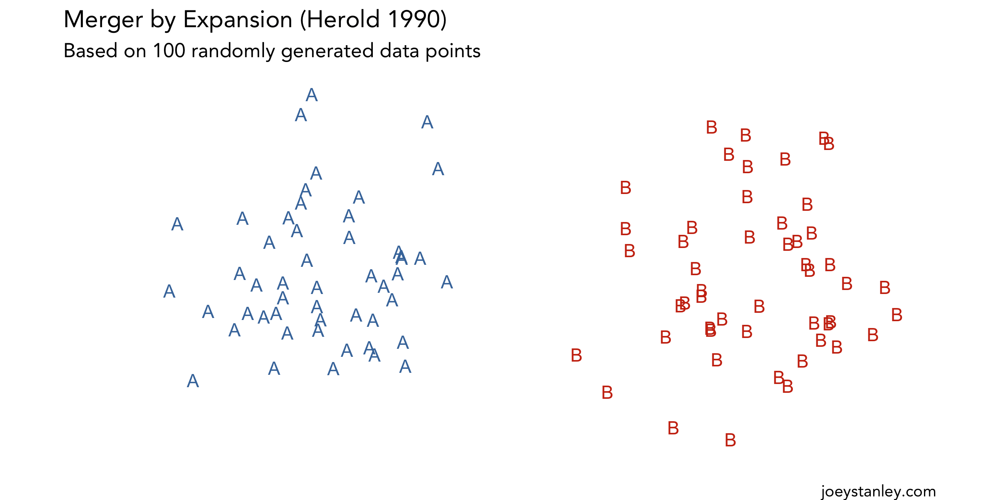

I’ve dabbled with creating animations in R, but since the newest version of gganimate came out, I’ve been trying to find a useful way to use it. (I don’t know if visualizing simulations of Chutes and Ladders counts as “useful”…) But as I was putting together a lecture on mergers last semester, it occured to me that the best way to illustrate them would be with animations! So I took the opportunity and created some fun visuals.
Using gganimate
As it turns out, gganimate is awesome! I mean all you need to do is add literally one line of code to your plot and it animates it! I find it easiest to think of the data in movie frames. When I group things by frame, gganimate will take care of the rest for me.
The tricky part is creating the underlying dataset. Let’s say I want to illustrate a merger with 50 hypothetical datapoints from vowel A and 50 from vowel B—that’s 100 data points total. If I’ve got an animation of in mind that has 15 different frames, I’m going to need a dataframe with 1500 rows in it. And when the data is all artificial, it gets tricky to create all those carefully.
So, this is not a tutorial because my code was awful, hacky, clunky, etc. It’s on my Github for reproducibility and stuff but I won’t talk about it much here because detracts from what I really wanted to show: the animations.
Merger by Approximation
I’ll start with a Merger by Approximation because it’s the most straightforward. The first to describe this was Trudgill & Foxcroft, who looked at the merger of Middle English ō [ɔː] (road, go) with the diphthong [ɔu] (flow, know). My American ears can’t even imagine these being pronounced differently, but apparently some speakers in East Anglia retain the distinction, though they were in the process of becoming merged.
I’ll let you dig into the original study , but the main point they make is that the merger happens “gradually.” Their description of this merger tactic is that speakers
“could gradually approximate the two vowels by bringing them closer together phonetically until, finally, they become identical.” (Trudgill & Foxcroft 1978:73)
Here’s what I have in mind for what a merger by approximation is like:

After several additional cases of this merger had been documented, Labov (1994:321) further clarifies, saying that the final vowel can end up somewhere between the two historic vowel classes. In other cases, like what I’ve illustrated above, one vowel stays put while the other vowel shifts to join it. In either case, the overall distribution of the final vowel is approximately the same size as one the original ones, leaving a gap in the F1-F2 space.
Merger by Transfer
In the very same paper, with the very same phenomenon, and among the same people, Trudgill and Foxcroft describe another mechanism of merger, which has since been called a Merger by Transfer. With this method, speakers
“could variably, one by one, transfer lexical items from one lexical set to another.” (Trudgill & Foxcroft 1978:72)
Here’s how I visualize this type of merger. I’ve animated so words shift slowly at first, then a whole bunch very quickly, and then tapering off. I don’t know if that S-shaped rate of change is officially part of a merger by transfer, but it’s kind of how I picture it.

Labov (1994:321) points out that you don’t really find any words phonetically intermediate between the two historic classes, which I think is the most distinguishing property of this merger. They’re either vowel A or vowel B. Labov also finds that this type of merger is more often found when there’s prestige involved and that the merger is a change from above.
It’s a haphazard shift, and during the change each person could have their own personal distribution of which words belong to which vowel class. Which probably makes it really juicy to study.
Merger by Phonological Transfer
Nearly 40 years later, Aaron Dinkin published a paper describing what he calls a Merger by Phonological Transfer. The phenomenon in question is the merger of
“the discrete replacement of one phoneme in a given phonological environment with a different phoneme.” (Dinkin 2016:183)
It’s a type of merger by transfer, only it happens phonologically rather than lexically. Instead of individual words defecting to another category, entire groups of words, defined by some phonological property, jump ship en bloc to the new phoneme.
Trudgill and Foxcroft also hint at this in their original 1978 paper, saying that
“In some cases, that is, diffusion of the innovation may not be genuinely lexical but rather influenced by phonological conditioning. In other words, the change may also be linguistically gradual, in that it affects some environments before others.” (Trudgill & Foxcroft 1978:73)
In Dinkin’s data, it appears that it’s not quite so abrupt. Before one vowel is replaced by another, words in that phonological category phonetically approximate the new vowel first, before switching over. So in the animation, I’ve included that detail:

Incidentally, I’ve totally got this merger in my own speech. The vowels in collar and caller are distinct but in doll and hall they are not. I grew up in a suburb of St. Louis, but my dad is from Upstate New York. I’ll have to ask him what his vowels are like in those words.
Merger by Expansion
The final merger I’ll show is was described by Ruth Herold in her 1990 dissertation. She too looks at the merger of
“The lexical constraints on the distribution of two former phonemes are lifted. As a result, the entire phonetic range formally divided between the two phonemes becomes available for the realization of either. (Herold 1990:91–92)
She provides some really excellent plots, showing a father-son pair where the father has a distinction and the son does not. The crucial part though is that “the phonetic range of the new phoneme is roughly equivalent to the union of the range of the two phonemes that merged” (Labov 1994:322). Here’s my interpretation of this merger.

This is a very abrupt change, happening quite suddenly, and Herold uses the word explode several times to describe what happens, so I wanted to convey that in my animation. Dan Johnson (2010) finds that even within the same family, younger children may have the merger and older kids do not.
Conclusion
I’ve learned that I’m a visual learner, so when the gganimate package came out, I thought I’d use it to illustrate different mechanisms of merger. These are my interpretations of how they progress, but I feel like these may be useful to other people as well.